El Sapiens de la restauración gastronómica
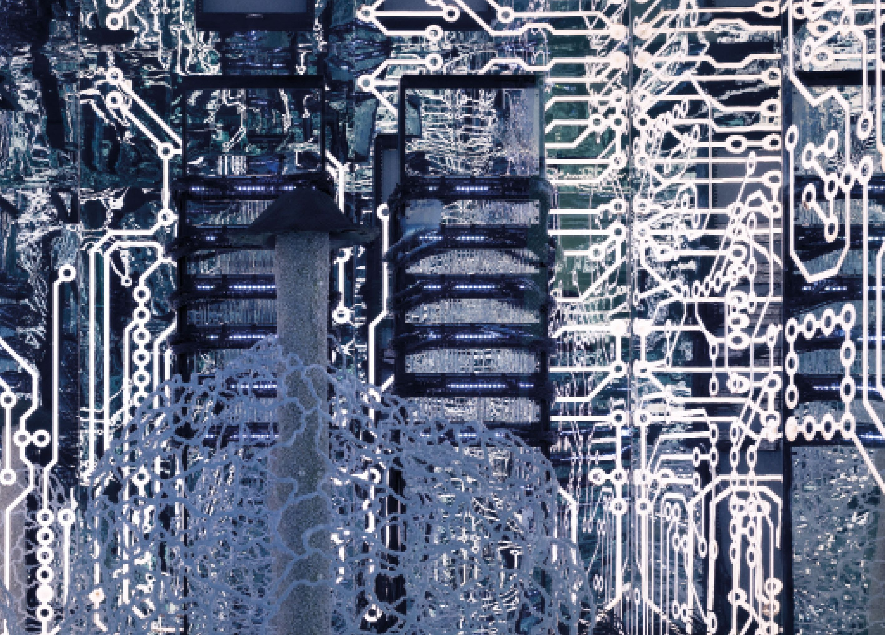
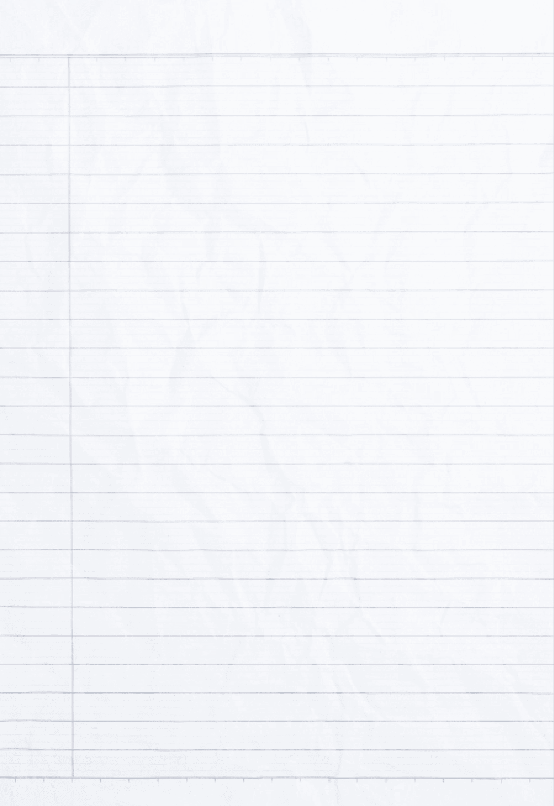
Una vez explicado todo esto, veamos el Sapiens de la restauración gastronómica.
A partir de ahora, utilizaremos RG para referirnos a la restauración gastronómica o el restaurante gastronómico
LOS métodos de sapiens aplicados a un RESTAURANTE GASTRONÓMICO (RG)
Los cinco métodos de Sapiens sintetizados cada uno en una pregunta
Como hemos visto, la metodología Sapiens está formada por cinco métodos, cada uno con un desarrollo y un listado de pasos en los que se propone hacer varios ejercicios para desarrollar en profundidad el prisma que corresponde a cada método.
También es posible sintetizar cada uno de los métodos en una sola pregunta, que se puede responder de forma intuitiva, para hacer una primera aproximación al estudio aplicando esos diferentes prismas, de manera muy simplificada.
En este libro nos centramos en el restaurante gastronómico, aunque en una aplicación completa de la metodología Sapiens, para comprender el restaurante gastronómico habría que comprender también la restauración, el restaurante, la gastronomía, cocinar, la cocina, la alimentación, etc.
Cocinar
Necesidad fisiológica
Alimentación
Hambre - sed
Tradicional foráneo
Tradicional país
TradicionaL
Comida
Mundo salado
Mundo dulce
Comer/beber
restaurante gastronómico
Cocina
Gastronomía
Servicio
Bebida
Actitud gastronómica
Degustar
Alta cocina
creativa
clásica
restaurante
Restauración gastronómica
Hostelería
Restauración
Restaurantes
Bares
Catering
¿Qué es?
¿A qué se parece y no es?
Un restaurante es, en primer lugar, una empresa: un lugar, un establecimiento público, en el que se cocina y se sirve comida y bebida. Se sirve en mesas individuales, con un número determinado de EQSD, a un precio fijo, en menú y/o carta. Se come, se bebe y se paga. Puede ser, o no, un restaurante gastronómico, que es un restaurante que se guía por la premisa de la actitud gastronómica y la apuesta por la calidad, y pretende ofrecer una experiencia lúdica y memorable.
Un restaurante se parece a un bar, pero no siemprees lo mismo. Cuando no es un bar de comidas, también es un establecimiento público y puede servir comida, pero principalmente bebidas, la comida que sirve son principalmente aperitivos o raciones, y permite consumir en la barra y no necesariamente en las mesas. También se parece a otros establecimientos públicos, como los hoteles, que tienen como servicio principal el alojamiento, aunque también sirven comida y bebida en sus restaurantes. Y el restaurante gastronómico, que pretende ofrecer una experiencia lúdica, se parece a otras ofertas de entretenimiento, como el teatro.
¿CÓMO SE RELACIONA EL RG CON EL MUNDO?
Los otros métodos existen ya en diferentes disciplinas. Es mucho menos normal el método sistémico, que nosotros enfocamos a través de tres megasistemas: la naturaleza, el ser humano y las necesidades del ser humano. Para comprender el restaurante como un sistema de gestión empresarial, ver SIGE, pág. 65.
Método léxico, semántico y conceptual
Método comparativo
Método SISTÉMICO
El orden de aplicación de los métodos es una propuesta flexible. En función del proyecto, este orden puede cambiar y puede ser necesario trabajarlos de manera paralela, ya que todos los métodos tienen puntos de conexión con todos los demás.
¿Qué tipos hay?
¿DE DÓNDE VIENE?
Existen muchos tipos de restaurantes, según múltiples criterios, empezando por el precio/target y el nivel de sofisticación de la oferta (en este sentido, el restaurante gastronómico y la alta gastronomía ocupan el nivel más alto). También según los productos, técnicas y elaboraciones dominantes, el tipo de servicio, espacios, o criterios de entorno (desde la geopolítica hasta la religión), orientación de la cocina (producto de proximidad o no, fast food o slow food, época/movimiento/estilo) o especificidades (temáticos o con espectáculo). Como empresa puede ser individual o formar parte de un grupo, de ámbito local, regional, nacional, internacional, de mayor o menor tamaño, de una u otra forma jurídica, etc.
El restaurante nace a finales del siglo xviii, aunque hay antecedentes de cocinas públicas como las tabernas. Originalmente, la gastronomía se circunscribía a los domicilios de las clases acomodadas, no a los establecimientos públicos. Cuando nacieron los primeros restaurantes, el arte culinario se introdujo en ellos. A partir de 1800 coexisten la restauración popular y la más sofisticada, y en los últimos 40 o 50 años los formatos se han multiplicado: desde la cocina más tradicional hasta la más lujosa o vanguardista, difuminándose las fronteras entre ellas.
Método clásificatorio
Método histórico
Empezamos por contextualizar la alimentación y la gastronomía
Antes de introducirnos en el análisis y estudio del restaurante gastronómico, es importante que nos detengamos a reflexionar sobre la alimentación y la gastronomía. Según la RAE, «alimentación» es:
La alimentación está impulsada por la necesidad biológica de nutrirse y subsistir, es una respuesta al hambre que sentimos y una necesidad vital ineludible. La RAE, define nutrir como «aumentar la sustancia del cuerpo animal o vegetal por medio del alimento, reparando las partes que se van perdiendo en virtud de las acciones catabólicas», y alimento como «conjunto de sustancias que los seres vivos comen o beben para subsistir» y «cada una de las sustancias que un ser vivo toma o recibe para su nutrición». Por tanto, para satisfacer esta necesidad, ingerimos alimentos —que pueden ser en forma de comida o de bebida—. Existen muchas formas de clasificar los tipos de alimentación, según el criterio que se utilice:
- Según el origen o tipo de los productos: omnívora, vegetariana, flexitariana, etc.
- Según la finalidad o propósito: saludable, terapéutica, deportiva, adelgazante, etc.
- Según la cultura y contexto geográfico:mediterránea, asiática, nórdica, fusión, etc.
- Según el grado o tipo de procesamiento:natural, procesada, ultraprocesada, artesanal, etc.
- Según criterios religiosos o filosóficos: kosher, halal, macrobiótica, naturista, etc.
Acudiendo de nuevo a la RAE, «gastronomía» es:
- f. Arte de preparar una buena comida. Sin.: cocina, culinaria, restauración.
- f. Afición al buen comer.
- f. Conjunto de los platos y usos culinarios propios de un determinado lugar.
Esta definición asocia la gastronomía a lo «bueno». Aunque existen interpretaciones de la gastronomía que la entienden como todo aquello que relaciona al ser humano con cualquier aspecto de su alimentación, en Sapiens la asociamos a una búsqueda ineludible de la calidad y a una actitud hedonista. La actitud gastronómica trasciende la mera alimentación, y lo hace a través de la búsqueda de la excelencia en aquellos aspectos que influyen en la experiencia final: producto, elaboración, servicio, interiorismo… El gastrónomo (y también el gourmet) es el individuo que recibe o disfruta de la experiencia gastronómica. En inglés, existe la denominación foodie, aunque tiene matices distintos a los de gastrónomo o gourmet.
A menudo, se tiende a asimilar la gastronomía con el arte culinario, la alta cocina o el fine dining, aunque esta asociación es un error. La gastronomía sucede en múltiples ámbitos, que pueden ser privados o públicos, y actualmente existe una oferta gastronómica muy diversa en la que conviven restaurantes de alta cocina y restaurantes con oferta de cocina tradicional refinada, junto a otros más accesibles como, por ejemplo, los bistronómicos, que practican la alta cocina casual e, incluso, ofertas gastronómicas donde la calidad se concentra en unos de los aspectos y es menos exigente en otros.
Clasificar los tipos de gastronomía es un asunto complejo, ya que se puede hacer desde distintos enfoques. En función de qué criterio apliquemos, obtendremos distintos resultados:
- Según el ámbito o contexto en que se realiza: doméstica, profesional, de calle, institucional, etc.
- Según el origen cultural o geográfico: local, regional, nacional, fusión, diáspora, etc.
- Según un enfoque global e histórico:mediterránea, mundo oriental, mundo occidental, etc.
- Según el enfoque temporal:tradicional, moderna, de autor, de vanguardia, etc.
- Según el nivel de sofisticación y calidad: alta gastronomía y media gastronomía (que es un concepto difícil de definir) No existe la baja gastronomía por la propia naturaleza de la definición de gastronomía, ligada a la calidad y excelencia.
- Según la finalidad o propósito: saludable, sostenible, turística, solidaria, etc.
- Según la relación con el conocimiento: científica, histórica, cultural, académica, etc.
- Según el compromiso ético o filosófico: slow food, consciente, circular, vegana, etc.
- Otras posibles clasificaciones según diferentes criterios.
¿Qué es un restaurante y qué es un RG?
Según la RAE, un restaurante se define como un «establecimiento público donde se sirven comidas y bebidas, principalmente almuerzos y cenas». En esta definición no se explicita que la actividad se realiza a cambio del pago de un precio, y tampoco se especifica dónde se consume la comida y bebida.
Pero para Sapiens, el restaurante es: «Un establecimiento público donde se produce una transacción comercial entre quien ofrece una oferta y quien los recibe a cambio de una contraprestación económica. Habitualmente, la comida y la bebida se consumen in situ, aunque existe una zona gris formada por establecimientos en los que conviven modalidades como el take away o el delivery».
Entonces, ¿qué es la RG?
La restauración gastronómica es aquella restauración que opera desde la actitud gastronómica y realiza una apuesta por la calidad del producto y de su elaboración y por la excelencia en todos los demás factores que contribuyen a construir el resultado final ofrecido al cliente, es decir, la oferta gastronómica. Designa un sector económico que pertenece a la hostelería: el universo de establecimientos dedicados a la prestación de servicios de alojamiento y restauración fuera del hogar, también denominado con el acrónimo HORECA (hoteles, restaurantes y cafeterías). Este sector forma parte del sector terciario y pertenece al ámbito de los servicios y el comercio.
El restaurante alimenticio (nombre que nadie usa y que no encontramos alternativa, lo usamos para designar los restaurantes que usamos para nutrirnos con independencia de la calidad y la excelencia).
- f. Acción y efecto de alimentar o alimentarse. Sin.: nutrición, manutención, ingestión.
- f. Conjunto de las cosas que se toman o se proporcionan como alimento.
- f. Actividad industrial o comercial de productos alimenticios.
Método léxico, semántico y conceptual
El restaurante gastronómico son empresas de tipo pyme compuestas por un número reducido de trabajadores y con un volumen de facturación moderado. Si no generan beneficios, no son viables.
Contextualizamos el restaurante gastronómico a través de su historia: sus antecedentes, el momento de su aparición y la evolución que ha experimentado hasta nuestros días.
Prehistoria (-2,5 MA a 3500 a. C.)
Durante la prehistoria no existe la cocina en el ámbito público, por tanto no existen en este periodo antecedentes del restaurante gastronómico más allá del propio nacimiento de la cocina.
Civilizaciones antiguas (3500 a. C.-476 d. C.)
Hacia el iii milenio a. C., en el marco de la civilización mesopotámica, los sumerios crearon las primeras tabernas, siendo este el momento en que nació la oferta culinaria en el ámbito público. Estaban vinculadas a la cocina popular, porque las elaboraciones servidas en ellas procedían de la comida nacida en el pueblo. Más tarde nació la cocina tradicional, que se transmite entre generaciones. Tras ellos llegaron otras civilizaciones: la egipcia (inventores del comedor público con menú limitado), la griega (primeras casas de hospedaje y comida) y la romana, que diferenció las tabernas por tipos: thermopalia, cauponae y popinae (las primeras ofrecían elaboraciones calientes, las segundas, elaboraciones frías que se degustaban sin mesa y las terceras, elaboraciones sencillas consumidas de pie, siendo establecimientos ligados al vino y al juego que por la noche se convertían en locales de alterne). Las cocinas de los palacios, castillos y casas nobles fueron los centros neurálgicos de «lo gastronómico», que se desarrollaba en el ámbito privado. Esta cocina gastronómica disfrutada por las élites se denominó durante siglos «arte culinario».
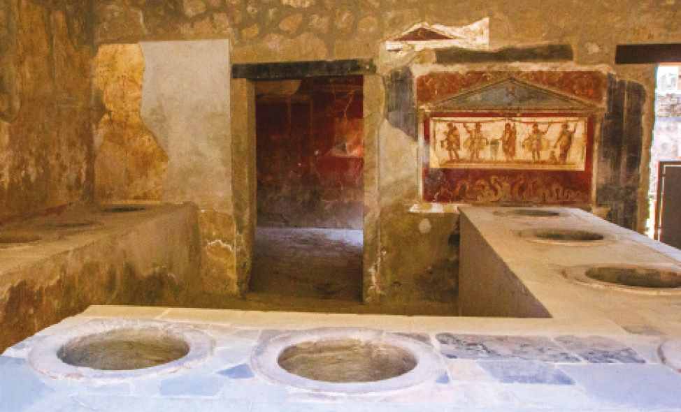
Taberna romana (thermopolium) de Vetutius Placidus en la ciudad de Pompeya (Italia).
Método histórico
En Roma, los historiadores han podido concluir que existieron tabernas donde se ofrecían productos de calidad que se podían pedir de forma concreta a un camarero o sirviente. Muchas de estas elaboraciones pertenecían a la cocina refinada, al arte culinario: venado, jabalí, pies de cerdo, gansos engordados, pan blanco… Eran, por tanto, espacios para gozar de placeres hedonistas en un espacio público. ¿No es esta una escena más propia de un restaurante como lo entendemos actualmente que de una taberna de la Antigüedad?
Edad media (476-1492)
La Edad Media dio paso a un sistema de posadas y tabernas donde el señor feudal se encargaba de fijar los precios del vino. La alternativa a estas tabernas eran a menudo los monasterios, que ofrecían posada gratuita a los viajeros. Existen pruebas documentales de que ya en el año 803 existía la posada Stiftskeller St. Peter, en Salzburgo, que todavía está en funcionamiento como restaurante gastronómico. En Londres y París también se conservan referencias a casas de comidas abiertas en la Baja Edad Media. A este mismo grupo de establecimientos históricos pertenecen las posadas Lindenkeller (1435) y Griechenbeisl (1447), en Viena, que aún siguen abiertas.
En el año 1420, el maestro Chiquart, en su obra Du fait de cuisine, dejó constancia de una elaboración hecha a base de caldo de capón que él denominaba «restaurante» debido a su capacidad de restaurar las fuerzas a quien la degustaba, era una preparación reconstituyente.
Renacimiento (1492-1600)
La taberna La Campana (1518, fecha estimada) en Roma o la taberna U Malí (1543) en Praga son establecimientos que se pusieron en marcha durante el Renacimiento y que todavía siguen existiendo. A lo largo del siglo xvi, en Inglaterra hubo una eclosión de tabernas y a mediados de siglo, en 1552, se legisló sobre las public houses (pubs). En 1582 (fecha afirmada por el propio establecimiento) y en la ciudad de París, se inauguró el célebre —y aún existente— La Tour d’Argent.
La gran cocina francesa (1600-1780)
Aunque todavía no existía la prensa y la crítica gastronómica, se publicó la obra Séjour de Paris, c’est à dire, instructions fidèles pour les voyageurs de condition de J. C. Nemeitz, donde se mostraban comentarios críticos que aludían a la mala reputación de las tabernas de la ciudad.
El restaurante como elaboración vivificante y reparadora seguía haciendo fortuna, y apareció en obras como la enciclopedia de Diderot & D’Alembert publicada entre 1751 y 1772, que aún resaltaba su utilización como remedio médico. En 1765, un tal Boulanger, cuyo nombre parece ser Roze de Chantoiseau, abrió un establecimiento en París (Rue des Poulies, cerca del Louvre) al que llamó restaurante. El nombre procedía de la oferta de sopas y caldos calientes que actuaban como «restaurantes de la salud».
Aparición del restaurante gastronómico (1780-1903)
A lo largo del siglo xix, surgió la figura del chef como gran referente de la cocina de calidad y del restaurante gastronómico. La influencia global de la cocina y la restauración francesa en este periodo se puede apreciar con ejemplos como los del Le Chat Noir (1881), un café/cabaret que fue replicado en Nueva York en el Au Chat Noir (1895). Bajo la influencia de Auguste Escoffier, la restauración en los hoteles evolucionó convirtiendo sus restaurantes en grandes referentes. De hecho, con César Ritz fundaron en 1898 el Hotel Ritz de París y en 1899 pasó a dirigir las cocinas del Hotel Carlton de Londres.
Por supuesto, no todo ocurría en Europa. En 1794 se inauguró el lujoso City Hotel en Nueva York, influyendo en el inicio de la era de los bares de lujo en los hoteles y del arte de la coctelería. Por su parte, la restauración en el mundo oriental no queda contemplada en la presente obra y tuvo su propio recorrido histórico.
Clasicismo codificado (1903-1965)
Con la llegada del siglo xx, como resultado del inmenso trabajo de codificación culinaria y de organización realizado por August Escoffier en colaboración con César Ritz, y con la consolidación de la Guide Michelin (la primera edición data de 1900), cambió el paradigma. El comensal adquirió capacidad de desplazamiento, siendo capaz de seleccionar el restaurante gastronómico de su interés.
Posclasicismo: la nouvelle cuisine (1965-presente)
Más allá de cambios profundos en la oferta culinaria, el modelo de restaurante gastronómico no sufrió modificaciones rupturistas durante este periodo. Cabe señalar, sin embargo, que se impuso una concepción más globalizada de la experiencia gastronómica, en la que se contemplaba el entorno, el servicio, el ritmo y la armonía visual. Y con el emplatado individual, también se potenció la figura del chef, siendo el primer paso hacia la consolidación de la idea de la cocina «de autor». Para comprender la nouvelle cuisine está el decálogo que publicó la revista Gault-Millau en 1973.
Posclasicismo: cocina tecnoemocional (1994-presente)
El restaurante gastronómico amplió su alcance y, en ocasiones, los establecimientos se convirtieron en centros de creatividad e investigación en diálogo con otros ámbitos y disciplinas. El objetivo pasó de centrarse en agradar al comensal a crear una experiencia capaz de despertar emoción, sorpresa y reflexión. En este periodo, se incorporó el servicio informal a entornos de la alta cocina y el comensal se convirtió en un elemento capaz de desarrollar un papel activo en la experiencia del restaurante.En España, tras la génesis producida en elBulli, figuras tan importantes como Juan Mari Arzak, Pedro Subijana, Martín Berasategui, Joan Roca, Carme Ruscalleda, Andoni Luis Aduriz, Quique Dacosta, Ángel León y otros grandes chefs han formado parte integrante de este movimiento, que con el tiempo se ha expandido globalmente a numerosos países, como México, Perú y Dinamarca.
Consecuencias de este movimiento: este movimiento resultó en un empoderamiento gastronómico de alcance global que tuvo especial repercusión en el ámbito del restaurante gastronómico promoviendo la libertad y la oferta relacionada al territorio.
Asimismo durante este periodo hemos asistido a una enorme evolución y diversificación de la oferta. Es el caso, por ejemplo, de la aparición de la barra como forma de degustación en el restaurante gastronómico, gracias a la influencia japonesa en la gastronomía occidental.
En España, y durante las últimas décadas, han surgido una multiplicidad de formatos de restauración gastronómica, creándose un amplio abanico que va desde la cocina tradicional hasta la más lujosa o creativa. El gastrobar, el restaurante bistronómico y algunos casos de tabernas gastronómicas que incorporan la creatividad son ejemplos de esta evolución y de la aparición de nuevos formatos de restaurantes gastronómicos.
La Grande Taverne de Londres, abierta en 1782 en París, se considera el establecimiento icónico que dio comienzo a la era de los restaurantes gastronómicos.
El nacimiento del restaurante gastronómico: 1782
En el último tercio del siglo xviii apareció el servicio a la carta y se abrieron numerosos establecimientos parisinos en forma de fondas y casas de comidas. Fue un proceso paulatino que culminó en 1782 con la apertura del que se considera el primer restaurante gastronómico propiamente dicho: La Grande Taverne de Londres, en París, con Antoine Beauvilliers como cocinero y propietario.
Antes de 1800, la restauración estaba vinculada a la cocina tradicional, que a su vez era popular, de las tabernas y mesones, mientras que el arte culinario se desarrollaba en el ámbito privado. A partir de esta fecha, asistimos a una coexistencia entre la restauración tradicional y la alta cocina que se lleva a cabo en los RG. Es en este periodo, y en el contexto de estos RG, cuando este arte culinario saltó a la esfera pública y comenzó a denominarse haute cuisine (en España, alta cocina, término que usaremos a lo largo del presente libro para referirnos a la cocina de origen palaciego que se expandió a la restauración pública). En inglés, también se la suele asociar al término fine dining. Fue durante el siglo xix cuando los grandes RG hicieron su aparición y pasaron a dominar la cocina de prestigio.
periodos de la historia de la restauración gastronómica
Edad Contemporánea
Edad moderna
edad antigua
Prehistoria
Edad media
Hoy
3500 A. c.
476 D. c.
1492
1600
1789
1903
1965
1994
1780
2,5 MA - 3500 a. c.
Paleolítico y Neolítico: los orígenes de la cocina
3500 A. c. - 476 d. c.
Civilizaciones antiguas: la génesis de la gastronomía
476 - 1492
la Gastronomía europea en la edad mediA
1492 - 1600
LA Gastronomía europea en el renacimiento
1600 - 1780
la gran cocina francesa
1780 - 1903
Aparición del restaurante gastronómico
1903 - 1965
Clasicismo codificado
1965 - Presente
Posclasicismo
1965 - Presente
Primera vanguardia
Nouvelle cuisine
1994 - Presente
Segunda vanguardia
Cocina tecnoemocional
Nombres con los que denominamos a los RG según su oferta de comida
En España, que es el ámbito de referencia que vamos a utilizar para este apartado, los establecimientos reciben diferentes nombres según su especialización. En general, este nombre especializado puede aparecer en la propia denominación del establecimiento, aunque no es obligatorio. Un establecimiento como el Restaurante Botafumeiro de Barcelona ocasionalmente podría haberse llamado también Marisquería Botafumeiro o Restaurante-Marisquería Botafumeiro.
Debemos tener en cuenta que hay que distinguir entre tipo de comida (para la RAE, comida es «lo que se come y bebe para nutrirse») y tipo de cocina (para la RAE, cocina es «arte o manera especial de guisar de cada país y de cada cocinero»). Existen restaurantes que centran su oferta en un tipo de comida —por ejemplo, los que se centran en un producto protagonista, como la comida vegetariana o el arroz— y otros, en tipos de cocina —por ejemplo, los que se centran en una técnica concreta (como los asadores), en cocinas foráneas (como la china o la mexicana) o en conceptos (como el bufet o la barra)—.
En ocasiones, algunos nombres pueden ser casi coincidentes y el uso de uno u otro puede depender más de la decisión del propietario que de una definición estricta que separe uno de otro. Es el caso de las fondas, mesones y casas de comidas, por ejemplo, que a menudo se confunden en el imaginario público y resultan casi equivalentes. En España, algunos de los nombres que se utilizan para denominar los establecimientos pueden tener origen regional (por ejemplo, chigre), nacional e incluso extranjero (por ejemplo, ramen bar).
Arrocería: restaurante especializado en arroces, con una oferta que suele incluir paellas, arroces caldosos y otras recetas tradicionales. Muy común en la Comunidad Valenciana.
Asador: establecimiento de restauración cuya identidad culinaria se basa en el asado de productos —especialmente carnes— en hornos, parrillas o dispositivos de fuego directo, generando cocciones uniformes, doradas y aromáticas.
Bar: establecimiento público donde se sirven bebidas —alcohólicas o no— y, con frecuencia, comidas ligeras o tapas, para consumirse en la barra o en mesas, en un ambiente informal y social.
Bar de menú: establecimiento de restauración que ofrece comidas completas a precio fijo, generalmente en formato de menú del día, con primeros, segundos y postre o café, con bebidas incluidas o no, destinado a un público cotidiano.
Bistró: restaurante de inspiración francesa con una carta reducida pero cuidada, basado en productos frescos de mercado y con un ambiente íntimo y acogedor.
Bodega: local vinculado al vino, dedicado a su almacenamiento y servicio, donde suelen ofrecerse también tapas o comidas sencillas.
Brasería: establecimiento especializado en platos cocinados a la brasa, ya sea con carbón vegetal, leña o parrilla metálica a alta temperatura. Prioriza el sabor ahumado y las técnicas de asado tradicionales.
Brunch: combina desayuno (breakfast) y almuerzo (lunch), y suele hacerse a media mañana o a mediodía, normalmente los fines de semana.
Bufet: establecimiento donde los comensales se sirven ellos mismos y eligen libremente entre una variedad de EQSD expuestas, pagando un precio fijo y pudiendo repetir las veces que deseen.
Casa de comidas: Ofrece elaboraciones caseras y de cocina popular, elaboradas de forma sencilla y a menudo con productos locales y de temporada, en un ambiente familiar y sin pretensiones.
Cevichería: restaurante de cocina peruana centrado en ceviches, tiraditos y otros platos de mariscos y pescados.
Chigre: Variante asturiana de la sidrería, caracterizada por un ambiente popular y rústico donde se escancia sidra y se sirven tapas tradicionales.
Fonda: restaurante modesto, generalmente dentro de un alojamiento pequeño, con comida casera a precios accesibles.
Gastrobar: establecimiento basado en las tapas cuya propuesta gastronómica la elabora un gran chef, con una actitud creativa. Su nivel e intensidad dependerán del chef que lidere el proyecto.
Hamburguesería: restaurante especializado en una oferta de hamburguesas y los complementos asociados a estas.
Kebab/Döner kebab: establecimientos de comida rápida con carne asada en un pincho vertical, servida en pan de pita o durum con ensalada y salsas. Estamos en una zona gris: puede haber distintos niveles de calidad y aunque puede existir alguno en formato restaurante, lo habitual y mayoritario es el formato street food.
Marisquería: restaurante donde el marisco es el protagonista, preparado a la plancha, cocido o generalmente con recetas tradicionales. Son habituales en zonas costeras y grandes ciudades. Hoy existen las marisquerías de autor, donde se han acortado las cocciones y existe una actitud creativa.
Mezze bar: establecimiento de cocina árabe o mediterránea que sirve pequeños platos para compartir, como hummus, falafel y kebabs.
Mesón: restaurante de cocina tradicional, generalmente con decoración rústica y una oferta de EQSD caseras, carnes a la brasa y vinos de la tierra. Suele asociarse con ambientes acogedores y comida abundante.
Ostrería: restaurante especializado en ostras. Inicialmente abiertas sin elaboración, en tiempos recientes también se elaboran a la gallega, en ceviche, con suquet, etc.
Pizzería: restaurante especializado en pizzas, generalmente en un horno de leña, y de varios estilos: napolitano, romano, americano, etc. Los entrantes se conocen como antipasti.
Pulpería: local especializado en la preparación del pulpo, especialmente en la receta gallega «pulpo a feira». Es habitual en ferias y eventos gastronómicos.
Ramen-ya/Ramen bar: pequeño local especializado en ramen japonés.
Rodizio: restaurante brasileño donde se sirven carnes asadas en espadas, en un servicio con cortes ilimitados.
Sidrería: establecimiento típico del norte de España donde se sirve sidra natural acompañada de platos tradicionales, como tortillas de bacalao o chuletas a la brasa.
Steakhouse: restaurante de estilo americano donde la carne de vacuno es la protagonista. Se sirve en diferentes cortes y grados de cocción.
Sushi bar: restaurante japonés especializado en sushi y sashimi. Donde se puede servir también tempura y otros platos típicos de la gastronomía nipona.
Taberna gastronómica: combina la esencia de una taberna tradicional con una propuesta culinaria innovadora y de calidad, fusionando tradición y modernidad.
Taquería: establecimiento de comida mexicana especializado en tacos, quesadillas y otros antojitos.
Trattoria: restaurante italiano de ambiente familiar y acogedor que ofrece platos tradicionales, como antipasto, pasta, risotto, pescados y carnes. Es más informal que un ristorante.
Venta: restaurante de carretera que ofrece comida casera y abundante, ideal para viajeros. Tradicionalmente se situaban en caminos y rutas comerciales.
Wok: bufet libre de comida asiática donde el cliente elige los productos y el chef los cocina al wok o a la plancha en el momento.
Casos especiales que no son restaurantes
Bar de vinos/Wine bar/Enoteca: establecimientos donde se sirven vinos por copa o botella con cierto nivel de asesoramiento experto, acompañados de oferta de comida, habitualmente en forma de tapas o pequeñas raciones. En el caso de la enoteca, los vinos suelen ser de alta gama.
Coctelería/Lounge bar: especializado en cócteles clásicos y de autor, con un ambiente elegante y bartenders profesionales. En el caso del lounge bar el ambiente suele ser moderno y sofisticado, con música relajada y cócteles prémium.
Restaurante: según Sapiens: establecimiento público donde se produce una transacción comercial entre quien ofrece un producto y un servicio —comida y bebida— y quien los recibe a cambio de una contraprestación económica. Habitualmente, la comida y la bebida se consumen in situ, aunque existe una zona gris formada por establecimientos en los que conviven modalidades como el take away o el delivery.
Método comparativo
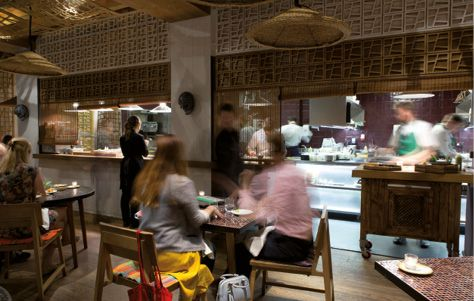
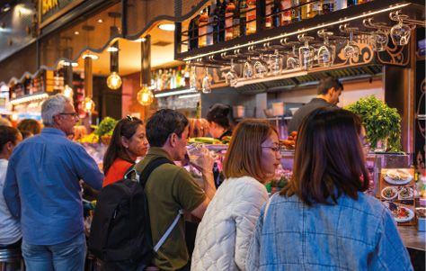
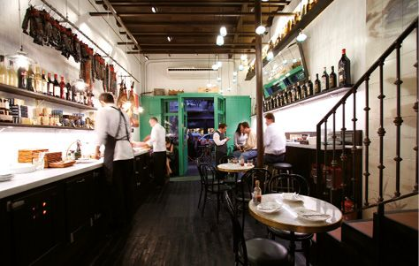
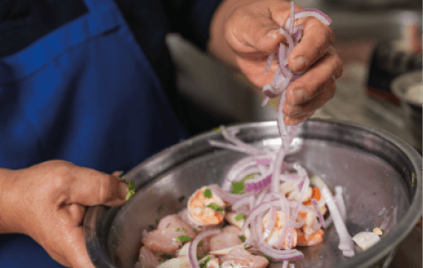
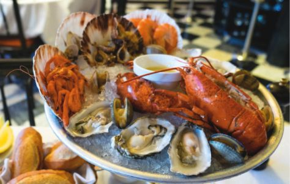
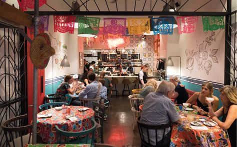
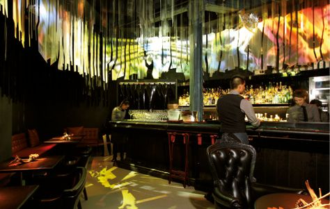
Existen diferentes guías con distintas clasificaciones. Cada una hace la suya y clasifica los restaurantes según su criterio.
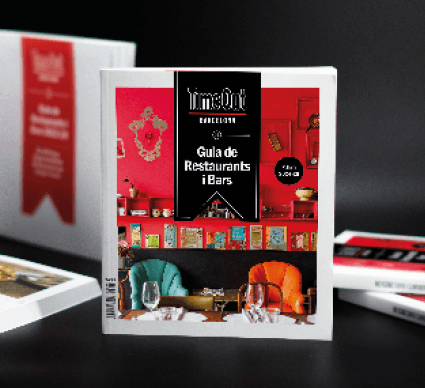
Tipos de RG
Todos los tipos de oferta de comida pueden ser o no gastronómicos, ya que la gastronomía se basa en la búsqueda rigurosa de la calidad en todos los aspectos que intervienen en la oferta (los productos, los procesos, las elaboraciones, el servicio, el interiorismo, etc.).
Por ejemplo, existen establecimientos gastronómicos basados en la oferta excelente de una elaboración concreta, como podrían ser la mejor pizzería o la mejor hamburguesería de tu ciudad, que por su calidad de comida y de elaboración, son gastronómicos, aunque el servicio o el interiorismo puedan ser relajados o sencillos. Hay que descartar la asociación del RG con un único tipo de establecimiento ligado a una oferta de alta cocina con servicio formal.
Existen numerosas preguntas que nos podemos hacer para obtener diferentes clasificaciones de restaurantes gastronómicos y, al contrario de lo que sucede en el caso de los nombres, puede pasar que un mismo establecimiento aparezca en diferentes clasificaciones. En función del tipo de oferta, podemos distinguir diversos tipos de restaurantes gastronómicos.
1. Según el tipo de producto dominante*
- Mundo vegetal: restaurantes donde lo vegetal predomina, llegando al caso extremo de los restaurantes vegetarianos y veganos.
- Mundo animal terrestre: restaurantes especializados, por ejemplo, en la cocina de caza.
- Mundo animal acuático: restaurantes habitualmente especializados en la cocina del mundo acuático como pescados y mariscos.
- Oferta integral: restaurantes no especializados donde la oferta abarca todas las familias de producto.
* Tal como hemos visto en la clasificación por nombres, este criterio permite también diferenciar con precisión cuando utilizamos el criterio de un producto concreto, por ejemplo: marisquerías, arrocerías, etc.
2. Según el origen y tratamiento del producto
Nos enfocamos en establecimientos basados en productos de calidad.
- Productos de kilómetro cero o territorio: productos locales, estacionales y con identidad geográfica.
- Productos externos, lejanos o importados: no existe una definición estandarizada de producto lejano, pero existen establecimientos con amplia oferta o especialización en productos no locales, en ocasiones centrados en la importación.
- Producto de lujo: ingredientes exclusivos, muchas veces exóticos o difíciles de conseguir.
- Producto transformado de autor: la materia prima es recreada, fermentada, madurada o intervenida con técnicas y una filosofía propia.
3. Según la técnica o técnicas principales
- Restaurantes con técnica de cocción dominante: establecimientos especializados, por ejemplo, un asador (cocción con parrilla u horno), una cevichería (marinados ácidos), un restaurante centrado en la cocina de fermentación, etc.
4. Según el criterio geográfico o cultural
- Restaurante de cocina local:corresponde a ámbitos como una comarca, una población o un conjunto de poblaciones. Está profundamente arraigada a productos y técnicas de una zona específica.
- Restaurante de cocina regional:en relación con una región concreta, por ejemplo, catalana, andaluza, madrileña, gallega, etc.
- Restaurante de cocina de un país:en relación con un país: japonesa, española, mexicana, etc.
- Restaurante de cocina por ámbito geográfico o cultural amplio: en relación con una región amplia que abarca diversos países: mediterránea, asiática, africana, etc.
- Restaurante de cocina fusión: este concepto es muy amplio y puede crear confusión. El diálogo cultural entre cocinas ha existido desde las civilizaciones antiguas. Aun así, denominamos cocina fusión al concepto nacido en la década de los 70 del siglo xx, cuando los cocineros occidentales mezclaron técnicas europeas con ingredientes asiáticos. En los años 90 se popularizó en Estados Unidos (especialmente en California/Los Ángeles) y países como Australia y Singapur también fueron relevantes en la expansión de esta mezcla consciente y creativa de tradiciones culinarias distintas para crear algo nuevo. Junto a otras razones estructurales, este tipo de restaurantes que ofrecen elaboraciones de distintas cocinas puede ser un factor de homogenización global de la oferta.
- Restaurante de oferta ecléctica: productos y técnicas de múltiples orígenes se ofrecen en forma de EQSD dentro de un mismo restaurante.
5. Según la localización del restaurante
- Urbana: restaurantes gastronómicos localizados en una ciudad; son los más habituales y existen con todo tipo de oferta.
- Rural:localizados en el campo, su oferta está generalmente ligada a la cocina tradicional, aunque sea refinada, y suele ser estacional. Existen también ejemplos de restaurantes en el mundo rural dedicados por completo a la creatividad e incluso la vanguardia.
- Litoral: situados en la costa, son restaurantes donde suele prevalecer una oferta de productos del mar y cocina asociada a los mismos.
- Montaña: situados en zonas montañosas, suele tener asociada una cocina estacional sincronizada con los productos locales, aunque no es imprescindible.
6. Casos especiales de localización singular
- Restaurante de hotel: restaurante dentro de un hotel, que puede ir desde un bufet básico hasta un espacio de alta cocina con estrella Michelin.
- Restaurante de club deportivo: local dentro de un club de golf, náutico o polideportivo, con menús adaptados a los socios y eventos del club.
- Restaurante en un barco: establecimiento instalado a bordo de una embarcación, que ofrece comidas y bebidas durante la navegación o el puerto, adaptado al espacio y condiciones marítimas.
- Refugio de montaña: establecimiento situado en un refugio donde se prepara comida contundente de alto contenido calórico y fortificante.
- Otras clasificaciones posibles
7. Según si es alta cocina o tradicional
- Restaurantes de cocina tradicional refinada: centrados en la preservación de recetas y métodos históricos con excelencia técnica y rigor cultural. Denominamos refinada a la interpretación de la cocina tradicional con el filtro de la máxima calidad y la actitud gastronómica.
- Restaurantes de alta cocina creativa: ofrecen propuestas culinarias de alta calidad, técnicas avanzadas, investigación gastronómica y un alto componente estético y simbólico.
- Restaurante de oferta ecléctica: su oferta es una mezcla de tipos de cocina, aunque habitualmente uno de los tipos representa la columna vertebral de la oferta.
8. Según la época/movimiento/estilo
- Restaurante de cocina tradicional
- Restaurante de alta cocina clásica (clasicismo codificado)
- Restaurante del movimientonouvelle cuisine
- Restaurante del movimiento tecnoemocional
- Restaurante ecléctico que ofrece varios de los movimientos anteriores
- Sin referencia a época o movimiento concreto
9. Según el nivel de innovación culinaria
En los restaurantes gastronómicos, se contempla el enfoque clásico (basado en la reproducción de las bases de la codificación de Escoffier) y el creativo, que admite distintos niveles: desde aportaciones puntuales hasta el grado máximo de creación e innovación, personificado en la cocina de vanguardia. La diferencia entre innovación y creatividad es que la innovación es el resultado exitoso —a nivel comercial— de la aplicación de alguna propuesta creativa.Los restaurantes de cocina tradicional no tienen un enfoque creativo si no es su origen, aunque cuando su oferta es de cocina tradicional refinada, sí que admiten una mirada creativa y estamos en una zona gris.
10. Según si dispone o no de una propuesta adaptada a principios morales y/o éticos
- Restaurante gastronómico vegetariano
- Restaurante gastronómico vegano
- Restaurante gastronómico crudivegano
- Restaurante gastronómico deslow food/km0
- Otras clasificaciones posibles
Actualmente también existe una creciente categoría de restaurantes sensibles a diferentes alergias e intolerancias, como por ejemplo al gluten, que no se definen estrictamente por un motivo ético pero que moldean su oferta para adaptarse y ser sensible a estas necesidades.
11. Según si dispone o no de una propuesta adaptada a principios religiosos
Existen restaurantes gastronómicos adscritos a alguna tendencia religiosa:
- Restaurante gastronómico de comida halal
- Restaurante gastronómico de comida kosher
- No adscrito a ninguna tendencia religiosa
- Otras clasificaciones posibles
12. Según la estructura de la oferta de comida
- Menú (a elegir entre opciones cerradas)
- Menú degustación largo
- Menú degustación corto
- Carta
- Bufet
- Formato tapas
- Combinación de las anteriores
13. Según la estructura de la oferta de bebida
- Oferta de bebida incluida en la oferta general: sin especialista en bebida.
- Oferta de bebida diferenciada de la oferta de comida:con especialista, oferta estructurada en carta y diferenciada por tipos de bebidas (aguas, vino, cerveza, cócteles, destilados, etc.).
- Oferta de bebida integrada con la oferta de comida: con especialista y estructurada en maridaje.
14. Según el modelo de servicio y la experiencia del comensal
- Experiencia formal de lujo: servicio altamente protocolizado, sumiller, maridajes, menús degustación largos.
- Experiencia inmersiva o sensorial: intervenciones artísticas, narrativas gastronómicas, interacciones con el chef.
- Experiencia personalizada: adaptabilidad a alergias, preferencias, historia del comensal como parte del menú.
- Experiencia informal: propuesta más relajada donde el protocolo se rebaja y la interacción es distendida.
15. Según el tipo de servicio
- Se sirve en mesa al comensal.
- Se sirve en barra al comensal.
- El cliente va a buscar la comida:bufet y autoservicio.
16. Según el precio/target
- Restaurantes con ticket medio de más de 300 €:son los restaurantes de más alta gama dentro del restaurante gastronómico.
- Restaurantes con ticket medio de 100 a 300 €:habitual en restaurantes de alta cocina y de cocina tradicional refinada, sobre todo con presencia importante de oferta de marisco.
- Restaurantes con ticket medio de 50 a 100 €:frecuentemente ligado a propuestas tipo bistró o gastrobar, por ejemplo.
- Restaurantes con ticket medio de menos de 50 €:infrecuente en los restaurantes gastronómicos no especializados, pero muy plausible en algunas de las especializaciones (pizzería, hamburguesería, etc.) o en las ofertas de carácter más informal y distendido, como las tabernas gastronómicas.
17. Según el nivel de lujo
Aspecto íntimamente ligado al nivel de precio, aunque podemos encontrar ofertas con una oferta lujosa que pueden resultar en niveles de precio que no son necesariamente los más elevados, pese a que el lujo siempre conlleva un coste asociado, por supuesto.
- Nivel de lujo muy alto
- Nivel de lujo alto
- Nivel de lujo medio
- Nivel de lujo bajo
18. Según el tipo de cliente
- Restaurantes enfocados en un público de determinada edad: jóvenes, tercera edad, etc.
- Restaurantes enfocados según el género: aunque infrecuentes, existen establecimientos más pensados o enfocados para público masculino o femenino…
19. Según el ambiente
El ambiente está formado por la suma de la oferta gastronómica (comida, bebida, interiorismo, servicio, etc.) y por los clientes (jóvenes, tercera edad, marchosos, tranquilos, etc.).
- Restaurantes de ambiente formal
- Restaurantes de ambiente casual
- Restaurantes de ambiente popular
- Otras clasificaciones posibles
20. Según el número de personas que asisten a un RG
- Restaurantes especializados en grupos:para celebraciones, salidas en grupo de gente joven, etc.
- Restaurantes enfocados en parejas: suelen ser establecimientos enfocados en un ambiente romántico.
- Restaurantes con enfoque individual:pensados para personas que buscan intimidad o rapidez, o que viajan o trabajan solas.
21. Según dónde se degustan sus EQSD
Para Sapiens, el restaurante requiere que las elaboraciones se consuman in situ. Por tanto, quedan en la zona gris aquellas ofertas de take away y delivery de restaurantes que ofrecen también estas opciones.
22. Según las posibles opciones de reserva
- Walk in, sin sistema de reserva
- Con reserva (sin depósito)
- Por teléfono
- En web
- En plataformas de reservas
- In situ
- Combinación de las anteriores/todas las anteriores
- Con reserva y depósito que se cobra en caso de no show
- Combinación de walk in junto a sistema de reserva
23. Según las franjas horarias en las que presta servicio
- Restaurante gastronómico que presta servicio de mañana (desayuno)
- Restaurante gastronómico que presta servicio de media mañana (brunch)
- Restaurante gastronómico que presta servicio de mediodía (aperitivo y/o almuerzo o comida)
- Restaurante gastronómico que presta servicio de media tarde (merienda)
- Restaurante gastronómico que presta servicio de tarde (aperitivo de tarde o cóctel)
- Restaurante gastronómico que presta servicio de noche (cena y/o recena)
- Restaurante gastronómico que presta servicio en dos franjas horarias (combinación de las anteriores)
- Restaurante gastronómico que presta servicio en más de dos franjas horarias (combinación de las anteriores)
24. Según presencia mediática y en redes sociales
- Con mucha presencia mediática/con nivel alto de presencia mediática
- Con presencia mediática/con nivel medio de presencia mediática
- Con poca presencia mediática/con nivel bajo de presencia mediática
- Sin presencia mediática
25. Según inclusión en rankings de prestigio y guías gastronómicas
- Restaurante gastronómico que está referenciado en al menos una guía gastronómica o ranking
- Restaurante gastronómico que aparece en guías de prestigio concretas, por ejemplo, la Guía Michelin
- Restaurante gastronómico que está referenciado en varias guías gastronómicas
- Restaurante gastronómico que ha sido galardonado por al menos una guía gastronómica.
- Restaurante gastronómico que ha sido galardonado por varias guías gastronómicas
- Restaurante gastronómico no referenciado ni premiado por ninguna guía gastronómica
26. Estructura empresarial o modelo de gestión
- Restaurante independiente, propiedad individual, de grupo reducido o de familia
- Restaurante asociado a un grupo gastronómico o marca de lujo
- Restaurante dentro de un hotel de alta gama.
- Restaurante efímero opop-upgastronómico (a veces itinerante, temporal, experimental)
Método clasificatorio
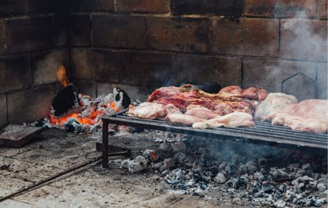
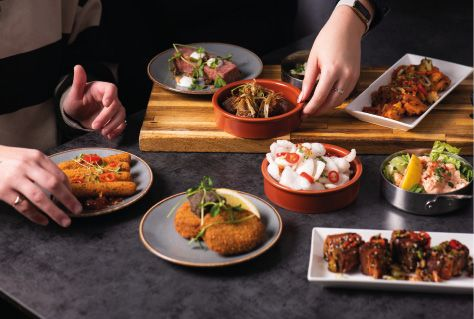
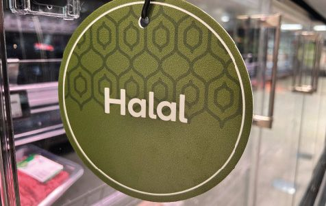
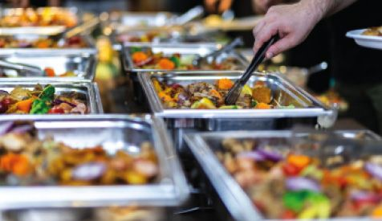
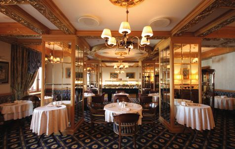
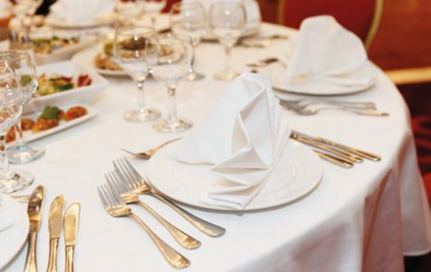
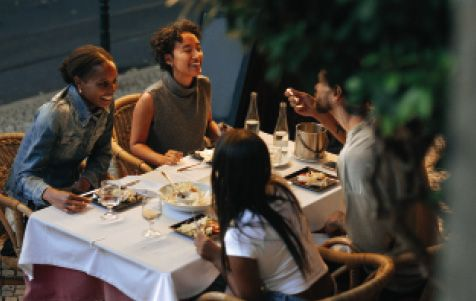
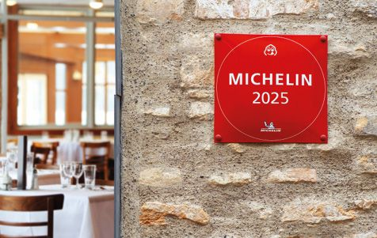
Restaurante gastronómico
La piedra angular de Sapiens
Primero aplicamos la
y después el
al
El método sistémico
Teoría general de sistemas
Pensamiento sistémico
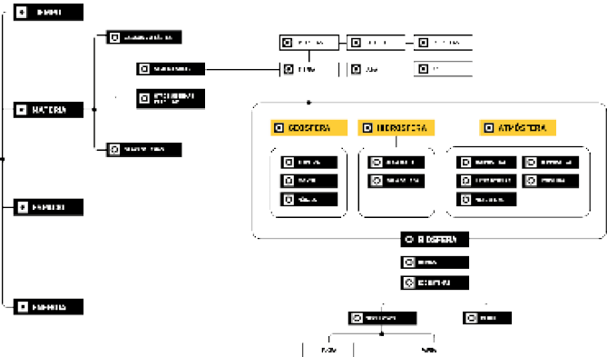
El restaurante: el contexto de la naturaleza, el ser humano y las actividades humanas en la sociedad
Nuestra interpretación de la teoría general de sistemas consiste en contextualizar el objeto de estudio en la naturaleza, el ser humano y la acción del ser humano.
La contextualización del restaurante, en primer lugar, en relación con la naturaleza, implica fijarnos especialmente en la biosfera, y en los recursos naturales. De la naturaleza proviene la materia prima de los productos alimentarios, tanto los no elaborados como los elaborados, que se utilizan en el restaurante, así como la energía.
En muchos casos, esos productos, en su estado original, no provienen de la naturaleza directamente, sino que son resultado de actividades humanas, principalmente la agricultura, ganadería, pesca y acuicultura. Aun así, la naturaleza es el origen histórico y el entorno en el que se desarrollan esas actividades humanas que abastecen al restaurante.
La naturaleza comprende la geografía, el relieve, el tipo de suelo, el agua, la atmósfera y, por extensión, el clima en todas sus escalas: desde las estaciones del año hasta los microclimas de una zona concreta. También incluye los materiales inorgánicos y los seres vivos no comestibles que conforman el paisaje y el entorno físico del restaurante. Todos estos elementos actúan como condicionantes fundamentales: tanto aquellos relativamente estables y de evolución lenta —que pueden representar oportunidades o amenazas— como aquellos asociados a fenómenos climáticos extremos, más imprevisibles y potencialmente disruptivos.
El entorno natural también es receptor de impactos, que pueden ser perjudiciales y están generados por el restaurante: desde los residuos que provienen de la merma, el desperdicio y los deshechos alimentarios y de todo tipo, incluidos los envases, hasta la huella de carbono y la contaminación atmosférica, directa o indirectamente. También existen impactos más indirectos y sutiles, como la huella hídrica o la contaminación lumínica, acústica o térmica. E incluso los hay positivos, como la recuperación del suelo, de la biodiversidad, etc.
La contextualización del restaurante en relación con el ser humano pasa, en primer lugar, por la vertiente física y la relación más directa con el cuerpo humano y sus diferentes sistemas, tanto desde el punto de vista del comensal como del profesional.
También hay relaciones menos obvias, a nivel físico, con el resto de sistemas del cuerpo humano. Por ejemplo, la ergonomía del mobiliario (sillas y altura de la mesa) impacta en la postura del cuerpo; la comodidad, la calidad del aire, la ventilación y los olores de la sala impactan en el sistema respiratorio; la activación o relajación provocadas por el ruido o la iluminación impactan en el sistema sensorial y también en el nervioso y el cardiorespiratorio y en la vertiente sensorial…
Para el personal del restaurante también son relevantes el impacto físico de estar de pie de forma prolongada, de hacer movimientos repetitivos, del ritmo acelerado, de estar expuesto a humos u otros vapores o sustancias en la cocina, del riesgo de lesiones, de insensibilidad o fatiga olfativa o gustativa por la sobreexposición a estímulos, del estrés auditivo por el ruido, de la paradoja de comer rápido, mal y a deshoras, del riesgo de deshidratación, etc.
También otras vertientes como la genética, la de salud o la psíquica, que conectan la salud mental con el bienestar emocional y lo social. Tienen un rol importante la memoria y los recuerdos, o la posibilidad de disfrutar, de sorprenderse positiva o negativamente, de frustrarse cuando no se corresponden expectativa y realidad.
Y para el personal, a nivel emocional, son relevantes la adrenalina y el estrés del directo y la inmediatez, y en el caso del personal de sala, la posible disonancia emocional por la necesidad de mostrar amabilidad al margen del estado de ánimo real.
El rg en relación con la naturaleza
Petróleo
Viento
y gracias a ella hacemos funcionar la sociedad
Gas natural
Recursos naturales
Se genera
La naturaleza nos da recursos
renovable
bosques
energía
Carbón
Gracias a
No renovable
selvas
Agua
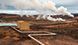
geotermia
Sol
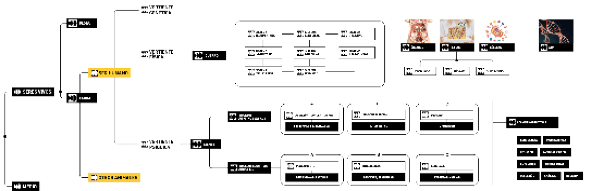
Además de los recursos naturales, qué recursos tiene el ser humano
El RG en relación con el ser humano
Recursos inmateriales
Recursos materiales
Igual que una persona sorda no puede oír o una persona ciega no puede ver, también puede estar limitada la capacidad de percibir gustos, aromas o texturas. Al contrario, también existe el talento sensoperceptivo: cuando se tiene una capacidad extraordinaria
Recursos económicos
Recursos personales
Recursos cognitivos
Capacidades
Habilidades
Por último, en relación con los ámbitos de la actividad humana, con los que se da respuesta a las necesidades básicas, el restaurante está en el ámbito de la alimentación (comer y beber para nutrirse) y la gastronomía (degustar por placer) en estrecha relación con la agricultura, ganadería, pesca y acuicultura, y también con la industria alimentaria o el transporte de mercancías que abastecen al restaurante, o el ocio, del que forma parte el restaurante.
Por su propia existencia, en tanto que empresa, es economía, concretamente microeconomía, y afectado por la macroeconomía, y tiene relación con el empleo y con todo lo relacionado con lo laboral (como las asociaciones empresariales y los sindicatos) y con el dinero (como, por ejemplo, la banca).
También está conectado con muchos otros ámbitos, con conexiones más directas por su actividad del día a día o más indirectas, esporádicas, simbólicas… De hecho, conecta con otros muchos sectores de actividad económica y profesional, pero también con la educación, la cultura, el arte, el bienestar social, el activismo, etc.
Nos dan los productos para cocinar y alimentarnos
Agricultura
Pesca
Degustar por placer, hedonismo
Hostelería
Comer y beber para nutrirse
alimentación
Nuestro ámbito es la
Ganadería
…
gastronomía
El RG en relación con las necesidades y las actividades del ser humano
Catering
Tiene una vida
Industria alimentaria
La industria alimentaria cocina para nosotros
Primero básicas y después cognitivas, emocionales, sociales, culturales, espirituales, etc.
privada
Necesidades
Se tienen unas
Pública
Nos informamos
Información
Tenemos que estar sanos y tener una vivienda
crean profesiones en distintos sectores
Salud
y nos expresamos a través del
Se necesita trabajar y generar dinero
Tenemos movilidad gracias al
empleo
laboral
Bienestar social
transporte
Buscamos el
infraestructuras
Nos comunicamos gracias a las
Seguridad
Justicia
Telecomunicaciones
Arte
Ocio
Queremos
Vivienda
Identidad humana
social
Dinero
Artes aplicadas
Bellas artes
Turismo
Urbanismo
Y nos educamos a través del conocimiento
También podemos hacer autoaprendizaje
Educación
Y nos comunicamos
Comunicación
Medios de comunicación (papel y digital)
Redes sociales
Audiovisual
Radio
Formación
Personalidad